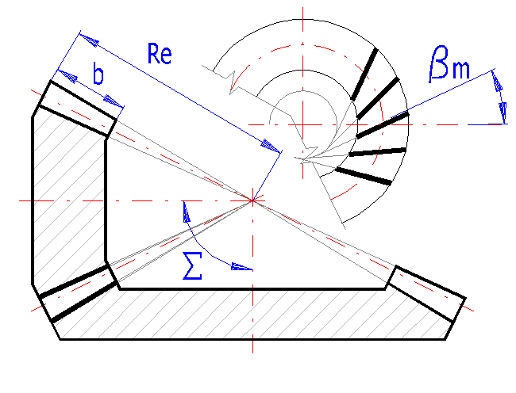
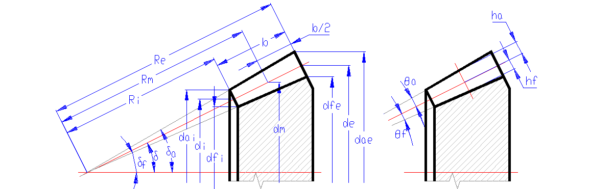
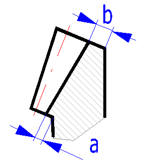

📥 Phần Đầu Vào (Input Section)
Mục 1.0 đến Mục 5.0 (Thông Số Truyền Động, Vật Liệu, Biên Dạng, Mô Đun & Dịch Chỉnh)
1.0 Nhập Các Thông Số Truyền Động Cơ Bản (Options of basic input parameters)
▶| # | Thông Số Tính Toán | Ký Hiệu | Bánh Dẫn (Pinion 1) | Bánh Bị Dẫn (Gear 2) | Đơn Vị | Công Cụ Tiện Ích |
|---|---|---|---|---|---|---|
| 1.1 | Công suất truyền động (Transferred power) | P | - | kW | - | |
| 1.2 | Tốc độ quay (Speed Pinion / Gear) | n | vòng/phút | |||
| 1.3 | Mô-men xoắn danh nghĩa (Torsional moment) | Mk | 477.46 | 1173.22 | N.m | |
| 1.4 | Tỉ số truyền yêu cầu (Transmission ratio / from table) | i_req |
|
- | - | - |
| 1.5 | Tỉ số truyền thực tế / Độ lệch (Actual ratio / deviation) | i | 2.5000 | 0.00% | - | - |
3.0 Thông Số Biên Dạng Răng & Kiểu Răng (Parameters of the tooth profile, gearing type)
▶| # | Thông Số Biên Dạng | Ký Hiệu | Bánh Dẫn (Pinion 1) | Bánh Bị Dẫn (Gear 2) | Đơn Vị | Công Cụ Tiện Ích |
|---|---|---|---|---|---|---|
| 3.1 | Đường cong răng / Kiểu răng côn (Type of toothing) | Type | - | - | ||
| 3.2 | Hệ số chiều cao đỉnh răng danh nghĩa (Addendum) | ha0* | [modul] | - | ||
| 3.3 | Hệ số khe hở chân răng (Unit head clearance) | c0* | [modul] | - | ||
| 3.4 | Hệ số bán kính lượn chân răng khuyến nghị | rf_rec* | 0.286 | 0.286 | [modul] | - |
| 3.5 | Hệ số bán kính lượn chân răng thiết kế | rf* | [modul] | - | ||
4.0 Thiết Kế Mô Đun & Thông Số Ăn Khớp (Design of a module & geometry of toothing)
▼| # | Thông Số Tính Toán | Ký Hiệu | Bánh Dẫn (Pinion 1) | Bánh Bị Dẫn (Gear 2) | Đơn Vị | Công Cụ Tiện Ích |
|---|---|---|---|---|---|---|
| 4.1 | Số răng bánh 1 & bánh 2 (Number of teeth) | z | răng | |||
| 4.2 | Góc giữa hai trục truyền động (Angle of shaft axes) | Σ |
|
- | độ (°) | - |
| 4.3 |
|
αn |
|
17.5° | độ (°) | - |
| 4.4 | Góc xoắn răng trung bình (Base helix angle) | βm |
|
0.0 | độ (°) | - |
| 4.5 | Hướng xoắn răng bánh dẫn (Direction of teeth pitch) | Hand | - | - | ||
| 4.6 | Thanh trượt điều chỉnh tỉ số bề rộng nón (b / Re) | b/Re | - | |||
| 4.7 | Tỉ số chiều rộng vành răng trên chiều dài nón | b/Re | 0.3458 | < 0.35 | - | - |
| 4.8 |
|
met |
|
11.547 | mm | - |
| 4.9 | Chiều rộng vành răng (Face width / max recommended) | b |
|
< 118 | mm | - |
| 4.10 | Khối lượng ước tính của bộ truyền (Gearing weight) | m | 134.331 | kg | - | |
| 4.11 |
3. Khe hở pháp tuyến theo cấp chính xác Q (Normal backlash - DIN 3965 / ISO 1328)
Chọn cấp chính xác (Accuracy grade - DIN 3965 / ISO 1328 | Ra max | v max)
|
Q | cấp | |||
| 4.12 | - Giá trị nhỏ nhất / lớn nhất khuyến nghị theo cấp chính xác (Recommended min. | max.) | jn min / max | 0.140 | 0.521 | mm | - |
| 4.13 | - Khe hở pháp tuyến chọn / Khe hở vòng trên mặt côn TB & Ngoài (Selected normal / mean & outer rotational backlash) | jn / jtm / jte |
0.4258
(jtm)
0.5179
(jte)
|
mm | ||
| 4.14 | - Hiệu chỉnh khoảng cách lắp ghép đỉnh nón lý thuyết & khe hở hướng tâm do jn (Mounting distance mod. ΔA1, ΔA2 | Radial play jr) | ΔA1 / ΔA2 / jr | 0.1301 |
0.5204
(ΔA2)
0.4832
(jr)
|
mm | - |
| 4.15 | - Khe hở hướng tâm đỉnh - đáy răng thực tế mặt cắt Ngoài | TB | Trong (Radial tip-root clearance ce | cm | ci) | ce / cm / ci |
Ngoài (ce):
1.3182
TB (cm):
1.3182
Trong (ci):
1.3182
|
mm | c = hf - ha (ISO 23509) | |
|
📐 Sơ Đồ Góc Xoắn βm & Thông Số Nón (ISO 23509)

📈 Tọa Độ Mặt Cắt Trục Ăn Khớp 2D (Axial Section Plot)
|
||||||
5.0 Dịch Chỉnh Biên Dạng & Chiều Dày Răng (Correction of toothing)
▼| # | Thông Số Dịch Chỉnh | Ký Hiệu | Bánh Dẫn (Pinion 1) | Bánh Bị Dẫn (Gear 2) | Đơn Vị | Công Cụ Tiện Ích |
|---|---|---|---|---|---|---|
| 5.1 | Phương pháp xác lập hệ số dịch chỉnh (Correction type) | Type | - | - | ||
| 5.2 | Giá trị khuyến nghị từ bảng thiết kế (Recommended value) | x1 / xt1 | 0.265 | 0.000 | - | - |
| 5.3 | Giới hạn cắt lẹm cho phép (Permissible undercutting) | x1_min | -0.5154 | -7.5964 | - | - |
| 5.4 | Giới hạn chống cắt lẹm tuyệt đối (Prevent undercutting) | x1_lim | -0.3488 | -7.4297 | - | - |
| 5.5 | Thanh trượt điều chỉnh hệ số dịch chỉnh chiều cao x1 | x1 Slider | - | - | ||
| 5.6 | Hệ số dịch chỉnh chiều cao răng (Addendum modification) | x | -0.3200 | - | - | |
| 5.7 | Hệ số dịch chỉnh chiều dày răng (Tooth thickness mod.) | xt | -0.0400 | - | - | |
| 5.8 | Hệ số trùng khớp tổng cộng (Total contact ratio) | εγ | 3.0117 | - | - | |
| 5.9 | Chiều dày đỉnh răng chuẩn (Chống nhọn: sae* ≥ 0.25) | sae* | 0.735 | 1.118 | [modul] | - |
📤 Phần Kết Quả Tính Toán (Results Section)
Mục 6.0 đến Mục 8.0 (Hình Học Đầy Đủ 39 Dòng, Răng Ảo Tredgold & Chỉ Số Chất Lượng)
6.0 Kích Thước Cơ Bản Của Cặp Bánh Răng Côn (Basic dimensions of gearing - ISO 23509)
▼
📐 Bản Vẽ Kỹ Thuật Định Nghĩa Kích Thước Hình Học Bánh Răng Côn (Technical Dimension Reference - ISO 23509)

| # | Kích Thước Hình Học (3 Mặt Cắt: Ngoài - Giữa - Trong) | Ký Hiệu | Bánh Dẫn (Pinion 1) / Ngoài (Outer) | Bánh Bị Dẫn (Gear 2) / Trung Bình (Middle) | Mặt Trong (Inner) | Đơn Vị |
|---|---|---|---|---|---|---|
| 6.1 | Số răng bánh 1 & bánh 2 (Number of teeth) | z | 18 | 45 | - | răng |
| 6.2 | Mô đun tiếp tuyến (Mặt ngoài met / Trung bình mmt / Mặt trong mit) | met, mmt, mit | 13.9610 | 11.5470 | 9.1330 | mm |
| 6.3 | Mô đun pháp tuyến (Mặt ngoài men / Trung bình mmn / Mặt trong min) | men, mmn, min | 12.0906 | 10.0000 | 7.9094 | mm |
| 6.4 | Chiều dài đường sinh nón (Mặt ngoài Re / Trung bình Rm / Mặt trong Ri) | Re, Rm, Ri | 338.321 | 279.821 | 221.321 | mm |
| 6.5 | Góc nón chia (Pitch cone angle) | δ | 21.8014 | 68.1986 | - | độ (°) |
| 6.6 | Góc nón đỉnh (Addendum cone angle) | δa | 24.5022 | 69.5907 | - | độ (°) |
| 6.7 | Góc nón đáy (Dedendum cone angle) | δf | 20.0001 | 65.0893 | - | độ (°) |
| 6.8 | Đường kính đỉnh ngoài (Outer tip diameter) | dae | 280.935 | 634.354 | - | mm |
| 6.9 | Đường kính đỉnh trung bình (Middle tip diameter) | dam | 232.358 | 524.666 | - | mm |
| 6.10 | Đường kính đỉnh trong (Inner tip diameter) | dai | 183.781 | 414.978 | - | mm |
| 6.11 | Đường kính chia ngoài (Outer pitch diameter) | de | 251.299 | 628.247 | - | mm |
| 6.12 | Đường kính chia trung bình (Middle pitch diameter) | dm | 207.846 | 519.615 | - | mm |
| 6.13 | Đường kính chia trong (Inner pitch diameter) | di | 164.393 | 410.983 | - | mm |
| 6.14 | Đường kính đáy ngoài (Outer root diameter) | dfe | 231.541 | 614.596 | - | mm |
| 6.15 | Đường kính đáy trung bình (Middle root diameter) | dfm | 191.505 | 508.325 | - | mm |
| 6.16 | Đường kính đáy trong (Inner root diameter) | dfi | 151.469 | 402.054 | - | mm |
| 6.17 | Góc đỉnh răng (Addendum angle) | θa | 2.7008 | 1.3921 | - | độ (°) |
| 6.18 | Góc đáy răng (Dedendum angle) | θf | 1.8013 | 3.1093 | - | độ (°) |
| 6.19 | Chiều cao đỉnh ngoài (Outer addendum) | hae | 15.960 | 8.222 | - | mm |
| 6.20 | Chiều cao đỉnh trung bình (Middle addendum) | ha | 13.200 | 6.800 | - | mm |
| 6.21 | Chiều cao đỉnh trong (Inner addendum) | hai | 10.440 | 5.378 | - | mm |
| 6.22 | Chiều cao đáy ngoài (Outer dedendum) | hfe | 10.640 | 18.378 | - | mm |
| 6.23 | Chiều cao đáy trung bình (Middle dedendum) | hf | 8.800 | 15.200 | - | mm |
| 6.24 | Chiều cao đáy trong (Inner dedendum) | hfi | 6.960 | 12.022 | - | mm |
| 6.24b | Chiều cao toàn bộ răng ngoài / trung bình / trong (Total tooth depth $h_e, h_m, h_i$) | he / hm / hi | 26.599 | 22.000 | 17.401 | mm |
| 6.24c | Khe hở hướng tâm đỉnh - đáy răng ngoài / trung bình / trong (Radial tip-root clearance $c_e, c_m, c_i$) | ce / cm / ci | 2.418 | 2.000 | 1.582 | mm |
| 6.25 | Góc áp lực pháp tuyến (Normal pressure angle) | αn | 17.4952 | độ (°) | ||
| 6.26 | Góc áp lực tiếp tuyến (Transverse pressure angle) | αt | 20.0000 | độ (°) | ||
| 6.27 | Góc xoắn răng trung bình (Helix angle) | β | 30.0000 | độ (°) | ||
| 6.28 | Góc xoắn cơ sở (Base helix angle) | βb | 28.4812 | độ (°) | ||
| 6.29 | Góc áp lực vòng lăn pháp tuyến (Operating normal press.) | αwn | 17.4953 | độ (°) | ||
| 6.30 | Góc áp lực vòng lăn tiếp tuyến (Operating transv. press.) | αwt | 20.0000 | độ (°) | ||
| 6.31 | Bước răng pháp ngoài (Circular pitch) | pe | 37.9838 | mm | ||
| 6.32 | Bước răng tiếp tuyến ngoài (Transverse circular pitch) | pte | 43.8599 | mm | ||
| 6.33 | Chiều dày răng pháp ngoài (Normal pitch tooth thickness) | sne | 22.2919 | 15.6919 | - | mm |
| 6.34 | Chiều dày răng pháp trung bình (Middle pitch thickness) | sn | 18.4374 | 12.9786 | - | mm |
| 6.35 | Chiều dày răng pháp trong (Inner pitch tooth thickness) | sni | 14.5828 | 10.2652 | - | mm |
| 6.36 | Chiều dày đỉnh răng ngoài (Outer tip tooth thickness) | sae | 8.8833 | 13.5204 | - | mm |
| 6.37 | Chiều dày đỉnh răng trung bình (Middle tip thickness) | sa | 7.3473 | 11.1826 | - | mm |
| 6.38 | Chiều dày đỉnh răng trong (Inner tip tooth thickness) | sai | 5.8112 | 8.8447 | - | mm |
| 6.39 | Chiều dày đỉnh răng chuẩn (sae / men) | sae* | 0.735 | 1.118 | - | [modul] |
7.0 Bánh Răng Trụ Tương Đương - Tredgold (Virtual spur gear toothing - 3 Mặt Cắt: Ngoài / Giữa / Trong)
▶
💡 Phương pháp Tredgold: Tính toán quy đổi bánh răng côn thành bánh răng trụ ảo tại 3 mặt cắt danh nghĩa: Mặt ngoài (Outer - phôi & đo kiểm), Mặt trung bình (Mean - chuẩn tính toán động học & độ bền ISO 23509), và Mặt trong (Inner - chân răng bé nhất).
| # | Thông Số Bánh Răng Ảo (Tredgold) | Ký Hiệu | Bánh Dẫn (Pinion 1) / Tiếp Tuyến (mt) | Bánh Bị Dẫn (Gear 2) / Pháp Tuyến (mn) | Đơn Vị |
|---|---|---|---|---|---|
| 🔢 I. Số Răng Ảo & Tỉ Số Truyền Ảo (Virtual Teeth & Gear Ratio) | |||||
| 7.1 | Số răng ảo pháp diện (Virtual teeth - normal) | zvn | 19.387 | 121.166 | răng |
| 7.2 | Số răng ảo tiếp tuyến (Virtual teeth - transverse) | zv | 29.848 | 186.548 | răng |
| 7.3 | Tỉ số truyền ảo tương đương (Virtual gear ratio) | iv | 6.250 | - | |
| 📏 II. Mô Đun Ảo Tương Đương (Virtual Modules: Tiếp Tuyến mt / Pháp Tuyến mn) | |||||
| 7.4 | Mô đun ảo mặt ngoài (Outer virtual module) | met, men | 13.9610 | 12.0906 | mm |
| 7.5 | Mô đun ảo trung bình (Mean virtual module - Chuẩn ISO/DIN) | mmt, mmn | 11.5470 | 10.0000 | mm |
| 7.6 | Mô đun ảo mặt trong (Inner virtual module) | mit, min | 9.1330 | 7.9094 | mm |
| ⭕ III. Đường Kính Chia Tương Đương (Virtual Pitch Diameters) | |||||
| 7.7 | Đường kính chia ảo ngoài (Outer virtual pitch diameter) | dve | 270.657 | 1691.607 | mm |
| 7.8 | Đường kính chia ảo TB (Mean virtual pitch dia. - Chuẩn ISO/DIN) | dvm | 223.857 | 1399.107 | mm |
| 7.9 | Đường kính chia ảo trong (Inner virtual pitch diameter) | dvi | 177.057 | 1106.607 | mm |
| 🔺 IV. Đường Kính Đỉnh Tương Đương (Virtual Tip Diameters) | |||||
| 7.10 | Đường kính đỉnh ảo ngoài (Outer virtual tip diameter) | dvae | 302.576 | 1708.050 | mm |
| 7.11 | Đường kính đỉnh ảo TB (Mean virtual tip dia. - Chuẩn ISO/DIN) | dva | 250.257 | 1412.707 | mm |
| 7.12 | Đường kính đỉnh ảo trong (Inner virtual tip diameter) | dvai | 197.938 | 1117.364 | mm |
| ⚙️ V. Đường Kính Cơ Sở Tương Đương (Virtual Base Diameters) | |||||
| 7.13 | Đường kính cơ sở ảo ngoài (Outer virtual base diameter) | dvbe | 254.334 | 1589.590 | mm |
| 7.14 | Đường kính cơ sở ảo TB (Mean virtual base dia. - Chuẩn ISO/DIN) | dvb | 210.357 | 1314.730 | mm |
| 7.15 | Đường kính cơ sở ảo trong (Inner virtual base diameter) | dvbi | 166.379 | 1039.870 | mm |
| 🔻 VI. Đường Kính Đáy Tương Đương (Virtual Root Diameters) | |||||
| 7.16 | Đường kính đáy ảo ngoài (Outer virtual root diameter) | dvfe | 249.378 | 1654.851 | mm |
| 7.17 | Đường kính đáy ảo TB (Mean virtual root dia. - Chuẩn ISO/DIN) | dvf | 206.257 | 1368.707 | mm |
| 7.18 | Đường kính đáy ảo trong (Inner virtual root diameter) | dvfi | 163.137 | 1082.562 | mm |
| 🎯 VII. Khoảng Cách Trục Tương Đương (Virtual Center Distances) | |||||
| 7.19 | Khoảng cách trục ảo ngoài (Outer virtual center distance) | ave | 981.132 | mm | |
| 7.20 | Khoảng cách trục ảo TB (Mean virtual center dist. - Chuẩn ISO/DIN) | av | 811.482 | mm | |
| 7.21 | Khoảng cách trục ảo trong (Inner virtual center distance) | avi | 641.832 | mm | |
| 📐 VIII. Chiều Dày Răng & Bề Rộng Rãnh Răng Ảo Tương Đương (Virtual Tooth Thickness & Slot Width) | |||||
| 7.22 | Chiều dày răng ảo ngoài (Outer virtual tooth thickness) | sve | 22.2919 | 15.6919 | mm |
| 7.23 | Chiều dày răng ảo TB (Mean virtual tooth thickness - Chuẩn ISO/DIN) | svm | 18.4374 | 12.9786 | mm |
| 7.24 | Chiều dày răng ảo trong (Inner virtual tooth thickness) | svi | 14.5828 | 10.2652 | mm |
| 7.25 | Bề rộng rãnh răng ảo ngoài (Outer virtual slot width) | eve | 15.6919 | 22.2919 | mm |
| 7.26 | Bề rộng rãnh răng ảo TB (Mean virtual slot width - Chuẩn ISO/DIN) | evm | 12.9786 | 18.4374 | mm |
| 7.27 | Bề rộng rãnh răng ảo trong (Inner virtual slot width) | evi | 10.2652 | 14.5828 | mm |
| 📏 IX. Đo Kiểm Dây Cung & Hệ Số Dịch Chỉnh Quy Đổi CAD (Virtual Inspection & CAD Shift) | |||||
| 7.28 | Chiều dày dây cung đo mỏ kẹp ảo TB (Virtual chordal tooth thickness) | svc | 18.4096 | 12.9784 | mm |
| 7.29 | Chiều cao đo mỏ kẹp ảo TB (Virtual chordal tooth height) | hvc | 13.6373 | 6.8347 | mm |
| 7.30 |
Hệ số dịch chỉnh quy đổi CAD (Equivalent Profile Shift for CAD) Dùng nhập vào CAD bánh răng trụ tiêu chuẩn không có ô xt: xeq = x + xt / (2·tanα)
|
x_eq | 0.3750 | -0.3750 | - |
8.0 Chỉ Số Chất Lượng Bộ Truyền (Qualitative indexes of a gearing)
▶| # | Chỉ Tiêu Chất Lượng | Ký Hiệu | Bánh Dẫn (Pinion 1) | Bánh Bị Dẫn (Gear 2) | Đơn Vị |
|---|---|---|---|---|---|
| 8.1 | Hệ số trùng khớp ngang / trùng khớp dọc | εα / εβ | 1.4289 | 1.5828 | - |
| 8.2 | Hệ số trùng khớp tổng cộng (Total contact ratio) | εγ | 3.0117 | - | |
| 8.3 | Vận tốc quay cộng hưởng (Resonance speed) | nE1 | 6188.65 | vòng/phút | |
| 8.4 | Tỉ số cộng hưởng (Resonance ratio) | N | 0.16 | - | |
| 8.5 | Khối lượng ước tính của cặp bánh răng côn | m | 134.331 | kg | |
| 8.6 | Hiệu suất truyền động của bộ truyền | η | 98.30% | % | |
| 8.7 | Độ nhớt dầu bôi trơn khuyến nghị tại 50°C | v50 | 57 mm²/s | mm²/s | |
⚙️ Phần Mở Rộng & Chế Tạo (Additions & Manufacturing Section)
Mục 11.0, 15.0 & 16.0 DIN 3965 / DXFTables (Lắp Ráp, Đo Mỏ Kẹp, Tính Phụ Trợ & Hệ Thống CAD)
11.0 Lắp Ráp, Đo Kiểm Mỏ Kẹp & Dung Sai Chế Tạo (Assembly, Chordal Measurement & Tolerances)
▼| # | Thông Số Lắp Ráp & Đo Kiểm Tra Răng | Ký Hiệu | Bánh Dẫn (Pinion 1) | Bánh Bị Dẫn (Gear 2) | Đơn Vị |
|---|---|---|---|---|---|
| 11.1 | Khoảng cách lắp ghép từ đỉnh nón đến mặt lưng (Apex to back) | Apex | 314.121 | 125.648 | mm |
| 11.2 | Chiều dày dây cung đo bằng thước kẹp mỏ răng (Chordal thickness) | sc̄ | 18.366 | 12.964 | mm |
| 11.3 | Chiều cao định vị mỏ kẹp đo răng (Chordal addendum) | hc | 13.578 | 6.877 | mm |
| 11.4 | Cấp chính xác chế tạo (Đồng bộ với Mục 2.6) | Q | - | ||
| 11.5 | Dung sai sai lệch bước răng (Single pitch deviation) | fpt | 18.2 µm | µm | |
| 11.6 | Dung sai hướng răng (Total helix deviation) | Fβ | 36.0 µm | µm | |
| 11.7 | Độ đảo vành răng hướng tâm (Radial runout) | Fr | 35.5 µm | µm | |
15.0 Các Phép Tính Toán Phụ Trợ (Auxiliary Calculations - MITCalc 1.74)
▶| # | Thông Số Tính Toán Phụ Trợ | Ký Hiệu | Bánh Dẫn (Pinion 1) | Bánh Bị Dẫn (Gear 2) / Kết Quả | Đơn Vị | Tác Vụ |
|---|---|---|---|---|---|---|
| 15.1 Tính toán tỉ số truyền từ tốc độ vòng quay (Calculation of transmission ratio from speed) | ||||||
| 15.1 | Tốc độ vòng quay bánh dẫn & bánh bị dẫn | n1, n2 | v/p (rpm) | - | ||
| - | Tỉ số truyền tính toán (Transmission ratio) | i | 2.6667 | - | ||
| 15.2 Tính toán công suất từ mô-men xoắn và tốc độ (Calculation of power from torque and speed) | ||||||
| 15.2 | Mô-men xoắn trên bánh dẫn | M1 | N.m | - | ||
| - | Tốc độ vòng quay bánh dẫn | n1 | v/p (rpm) | - | ||
| - | Công suất truyền động tính toán (Transmitted power) | P | 45.239 | kW | ||
| 15.3 Tính toán tỉ số truyền từ số răng (Calculation of transmission ratio from number of teeth) | ||||||
| 15.3 | Số răng bánh 1 & bánh 2 | z1, z2 | 18 | 45 | răng | - |
| - | Tỉ số truyền động học (Transmission ratio) | i | 2.5000 | - | ||
16.0 Xuất Bản Vẽ Đồ Họa, Hệ Thống CAD & Bảng Chế Tạo (Graphic Output, CAD Systems & DXFTables)
▶
🖥️ 16.1 Chọn Hệ Thống CAD Mục Tiêu (CAD System Selection)
| 16.1 | Xuất bản vẽ 2D sang (2D drawing output to): | |||
| 16.2 | Tỉ lệ bản vẽ 2D (2D Drawing scale): | |||
| 16.3 | Chi tiết bản vẽ hiển thị (Detail): | |||
| 16.7 | Bảng thông số chế tạo CAD (Table of parameters): | |||
⚙️ 16.2 Thông Số Dao Cắt & Dịch Chỉnh Gia Công CAD
| Thông Số | Ký Hiệu | Bánh 1 | Bánh 2 | Đơn Vị |
|---|---|---|---|---|
| Bán kính dao cắt nón (Tool radius R = 1.5·b) | R | 175.5 | 175.5 | mm |
| Lượng dịch chỉnh trong (Inner offset) | a | 4.629 | 5.658 | mm |
| Lượng dịch chỉnh ngoài (Outer offset) | b | 12.730 | 19.095 | mm |
📐 Sơ Đồ Lượng Dịch Chỉnh Răng R, a, b

16.3 Lệnh Xuất Đồ Họa & Bản Vẽ DXF:
Chuẩn Release 12 (AC1009) mở tốt từ AutoCAD 2004 đến 2026, SolidWorks, Inventor
Mức 6 (Chuẩn Gốc)
📋 16.4 Bảng Thuộc Tính Xuất Danh Mục BOM (Bill of Materials)
| Dòng BOM | Thuộc Tính Chi Tiết | Bánh Dẫn (Pinion 1) | Bánh Bị Dẫn (Gear 2) |
|---|---|---|---|
| Dòng 1 | Tên chi tiết (Part Name) | Bevel gear - Pinion | Bevel gear - Gear |
| Dòng 2 | Quy cách kỹ thuật (Specification) | z1=18, mmn=10, beta=30 | z2=45, mmn=10, beta=30 |
| Dòng 3 | Vật liệu chế tạo (Material) | Material: Ck 60 | Material: Ck 60 |
📑 16.5 Bảng Thông Số Chế Tạo Gia Công Chi Tiết (DXFTables - DIN 3965 / ISO 23509)
| # | Thông Số Gia Công Chế Tạo | Ký Hiệu | Bánh Dẫn (Pinion 1) | Bánh Bị Dẫn (Gear 2) | Đơn Vị |
|---|---|---|---|---|---|
| 16.5.1 | Mô đun pháp tuyến trung bình | mmn | 10.000 | mm | |
| 16.5.2 | Số răng bánh 1 & bánh 2 | z | 18 | 45 | răng |
| 16.5.3 | Góc nón chia | δ | 21.8014 | 68.1986 | độ (°) |
| 16.5.4 | Đường kính vòng đỉnh ngoài | dae | 280.935 | 634.354 | mm |
| 16.5.5 | Chiều dài đường sinh nón ngoài | Re | 338.321 | mm | |
| 16.5.6 | Chiều rộng vành răng | b | 117.0 | mm | |
| 16.5.7 | Hệ số dịch chỉnh biên dạng | x | 0.3200 | -0.3200 | - |
| 16.5.8 | Hệ số dịch chỉnh chiều dày răng | xt | 0.0400 | -0.0400 | - |
| 16.5.9 | Hướng xoắn răng (Tooth hand) | Hand | Xoắn Trái (Left-Hand) | Xoắn Phải (Right-Hand) | - |
| 16.5.10 | Cấp chính xác gia công chế tạo | Grade | DIN 3965 5 / 6 .... (Ra max.= 1.6 / v max.= 20) | - | |
📖 CẨM NANG & HƯỚNG DẪN KỸ THUẬT CHUYÊN SÂU BÁNH RĂNG CÔN (ISO 23509 / DIN 3965 / DIN 3971)
17.0 Hướng Dẫn & Giải Nghĩa Kỹ Thuật Toàn Diện (Technical Guide & Parameter Handbook)
▶📐 17.1 Góc Ăn Khớp Pháp (αn) và Góc Ăn Khớp Ngang (αt) (Dòng 4.3)
Trong bánh răng côn, hai góc ăn khớp này được đo trên hai mặt phẳng không gian khác nhau:
- Góc ăn khớp pháp (αn - Normal Pressure Angle): Đo trên mặt phẳng pháp tuyến (vuông góc với phương đường xoắn răng). Đây chính là góc danh nghĩa của cạnh cắt dao gia công (dao bào Gleason, dao phay đĩa, đầu dao phay xoắn Cutter Head). Tiêu chuẩn xưởng thông dụng là 20.0°.
- Góc ăn khớp ngang (αt - Transverse Pressure Angle): Đo trên mặt phẳng ngang (vuông góc với đường sinh nón chia hoặc mặt phẳng nón phụ). Góc này quyết định trực tiếp đường kính vòng cơ sở
db = d · cos αtvà lực vòng tiếp tuyến Ft.
Mối quan hệ lượng giác không gian qua góc xoắn trung bình βm:
tan αn = tan αt · cos βm ⇔ tan αt = tan αn / cos βm
- Khi răng thẳng (βm = 0°): Do
cos(0°) = 1.0, nênαn = αt = 20.0°(hai góc trùng nhau hoàn toàn). - Khi răng xoắn / răng cong (βm > 0°): Góc ngang αt luôn lớn hơn góc pháp αn (ví dụ βm = 35°, αn = 20° ⇒ αt ≈ 24.0°).
- Quy chuẩn xưởng: Luôn ưu tiên chọn [B. Góc ăn khớp pháp αn] vì các loại dao trong xưởng đều được chế tạo theo góc pháp chuẩn.
⚙️ 17.2 Khe Hở Cạnh Răng (Backlash) & Hiệu Chỉnh Lắp Ghép (Dòng 4.11 – 4.14)
Khe hở sườn răng là bắt buộc để tránh kẹt răng khi giãn nở nhiệt và tạo màng dầu bôi trơn:
- Cấp chính xác Q (Dòng 4.11 - DIN 3965 / ISO 1328): Cấp 5–6 là cấp cao cho hộp số công nghiệp chất lượng cao (Ra ≤ 1.6 μm). Hộp kiểm [Tự động (v)] tự đề xuất cấp Q theo vận tốc vòng v (m/s).
- Dải khe hở an toàn (Dòng 4.12): Giới hạn từ
jn min(tránh kẹt khi máy nóng) đếnjn max(tránh va đập khi đổi chiều quay). - Khe hở pháp tuyến jn & Khe hở vòng (Dòng 4.13):
jtmđo tại mặt nón trung bình;jteđo tại đầu to của răng (Mặt nón ngoài). Trong xưởng, thợ kẹp đồng hồ so (Dial Indicator) tại đầu to của vành răng và lắc nhẹ để kiểm tra, độ dịch kim đồng hồ đúng bằngjte.
🔍 PHÂN TÍCH CHUYÊN SÂU: Mối Quan Hệ Giữa Khe Hở Hướng Tâm jr và Lượng Dịch Dọc Trục ΔA1, ΔA2 (Dòng 4.14)
Khác với bánh răng trụ (chỉ cần chỉnh khoảng cách trục a), bánh răng côn có 2 đỉnh nón giao nhau tại Apex V(0,0). Khe hở pháp tuyến jn liên hệ chặt chẽ với phương hướng tâm và phương dọc trục:
| Thông số | Công thức lượng giác | Ý nghĩa vật lý & Thao tác căn chỉnh xưởng |
|---|---|---|
| jr (Radial play) | jr = jn / (2 · sin αn) |
Độ rơ hướng tâm tương đương (phương vuông góc với trục quay). Là cầu nối trung gian từ jn sang dịch trục ΔA. |
| ΔA1 (Pinion mount) | ΔA1 = jr / sin δ1 = jn / (2 sin αn sin δ1) |
Lượng dịch chuyển dọc trục của Bánh dẫn 1 để đạt jn. Do góc nón δ1 nhỏ (≈ 21.8° ⇒ sin δ1 nhỏ), nên ΔA1 lớn (+1.039 mm). Bánh 1 ít nhạy cảm với sai số dọc trục. |
| ΔA2 (Gear mount) | ΔA2 = jr / sin δ2 = jn / (2 sin αn sin δ2) |
Lượng dịch chuyển dọc trục của Bánh bị dẫn 2. Do góc nón δ2 lớn (≈ 68.2° ⇒ sin δ2 ≈ 0.93), nên ΔA2 nhỏ (+0.416 mm). Bánh 2 cực kỳ nhạy cảm với căn đệm dọc trục! |
⇒ Quy tắc chuyển đổi xưởng:
jn ⟶ (÷ 2 sin αn) ⟶ jr ⟶ (÷ sin δ) ⟶ ΔA. Người thợ dùng giá trị ΔA để chọn chiều dày vòng đệm căn (shims) khi ráp hộp số!
⚡ 17.3 Dịch Chỉnh Biên Dạng Chiều Cao x và Chiều Dày xt (Mục 5.0, Dòng 5.1 – 5.9)
- Hệ dịch chỉnh đều V-Null (VN):
x1 = +x, x2 = -x ⇒ Σx = 0. Bảo tồn nguyên vẹn góc nón chia δ và đỉnh nón Apex, cực kỳ thuận tiện cho chế tạo và lắp ráp. - Chống cắt lẹm chân răng (Dòng 5.3 & 5.4):
x1 min = -0.5154(giới hạn cho phép),x1 lim = -0.3488(chống cắt lẹm tuyệt đối). Khix1 > x1 lim(hiện tại +0.32), chân răng hoàn toàn mập mạp và không bị yếu chân răng. - Dịch chỉnh chiều dày răng xt (Dòng 5.7):
xt1 = +0.04, xt2 = -0.04. Do bánh nhỏ quay nhanh hơn bánh lớn (chịu chu kỳ mỏi uốn nhiều hơn), người ta làm dày thêm thân răng bánh nhỏ và gọt mỏng bớt thân răng bánh lớn để cân bằng tuổi thọ mỏi uốn giữa 2 bánh. - Hệ số trùng khớp tổng cộng εγ (Dòng 5.8): Tiêu chuẩn yêu cầu
εγ ≥ 1.20. Giá trị hiện tại 1.6214 là rất lý tưởng, luôn có 1–2 đôi răng cùng gánh tải, bộ truyền chạy êm ái. - Chiều dày đỉnh răng chuẩn sae* (Dòng 5.9): Tiêu chuẩn ISO 23509 bắt buộc
sae* ≥ 0.25 [modul]. Giá trị 0.708 và 1.119 đảm bảo đầu răng dày dặn, khi tôi nhiệt luyện không bao giờ bị nứt vỡ hoặc cháy mép.
📋 17.4 Bảng Tổng Hợp So Sánh 5 Phương Pháp Dịch Chỉnh (A – E) (Dòng 5.1)
| Mã | Tên phương pháp | Công thức / Nguyên lý | Mục tiêu cốt lõi | Trường hợp ứng dụng thực tế |
|---|---|---|---|---|
| A | Răng thẳng VN, tăng độ bền uốn | Bảng tối ưu uốn theo zv1, zv2 (x1 ≈ +0.50 ÷ +0.60) | Chống gãy đứt chân răng, chân răng to mập tối đa | Tải va đập mạnh, tải sốc, cẩu trục, máy nghiền, số răng z1 ít (≤ 16). |
| B ⭐ | Răng thẳng VN, tăng độ bền tiếp xúc [MẶC ĐỊNH] | Bảng tối ưu tiếp xúc (x1 ≈ +0.25 ÷ +0.35, xt1 = +0.04) | Chống tróc rỗ, mài mòn mặt răng, cân bằng trượt riêng, chạy êm | Đại đa số hộp giảm tốc công nghiệp, hoạt động liên tục nhiều giờ. |
| C | Răng thẳng, răng nghiêng DIN 870 | x1 = (14 - zv1) / 17 |
Chuẩn công nghiệp Đức cổ điển, ưu tiên thu gọn kích thước bao | Gia công thay thế, phục chế máy móc của Đức/Châu Âu theo bản vẽ cũ. |
| D | Răng thẳng, răng nghiêng BSI | x1 = max(0.4(1 - zv1/zv2), 0.02(30 - zv1)) |
Chuẩn Hoàng gia Anh BS 545, phân bố đều chiều dày răng | Thiết kế máy cơ khí xuất khẩu sang Anh hoặc khối Thịnh Vượng Chung. |
| E | Răng cong (Curved teeth) | x1 = 0.00, xt1 = 0.00 |
Không dịch chỉnh, thuận tiện cài đặt đầu dao máy phay răng xoắn | Bánh răng côn răng xoắn / răng cong Gleason / Klingelnberg (βm ≥ 30°). |
🧭 17.5 Ma Trận Lựa Chọn Thiết Kế Bánh Răng Côn Thực Tế (ISO 23509 / Gleason / Klingelnberg)
Hệ thống hóa kinh nghiệm thiết kế xưởng và quy chuẩn quốc tế cho 10 trường hợp chế tạo bánh răng côn phổ biến nhất trong thực tế công nghiệp:
| # | Ứng Dụng & Điều Kiện Tải | Kiểu Răng (Mục 3.1) | Dịch Chỉnh (Mục 5.1) | Góc βm & Hướng Xoắn | Yêu Cầu Ổ Đỡ & Vỏ Hộp | Lưu Ý Xưởng Sống Còn |
|---|---|---|---|---|---|---|
| 1 |
Băng tải chậm, máy nông nghiệp, tời tay v < 3 m/s • Tải nhẹ • z1 ≥ 20 |
1 - Bào Gleason (Thẳng I) | DIN 870 / Tiêu chuẩn (x1=0, x2=0) |
βm = 0° (Không xoắn) |
Ổ bi đỡ sâu thông thường, vỏ hộp đúc đơn giản. | Chi phí thấp nhất, dễ gia công đơn chiếc trên máy phay vạn năng. |
| 2 |
Bánh răng thẳng tỷ số lớn, bánh nhỏ ít răng v < 5 m/s • z1 = 12 ÷ 17 (Dễ cắt lẹm) |
1 - Bào Gleason (Thẳng I) | Dịch chỉnh uốn VN (x1 = +0.3 ÷ +0.6) |
βm = 0° | Ổ bi đỡ chặn hoặc đũa côn chịu tải hướng tâm lớn. | Bắt buộc x1 > 0 để triệt tiêu cắt lẹm chân răng z1, tăng bền uốn 30-40%. |
| 3 |
Nâng cấp hộp số cũ ồn/rung (thay thế trực tiếp) v = 4 ÷ 10 m/s • Cần êm • Giữ vỏ hộp cũ |
3 - Cung tròn Zerol (II) | Curved teeth hoặc Dịch chỉnh uốn VN |
βm = 0° (Lực dọc Fa ≈ 0) |
Giữ nguyên ổ đỡ cũ của răng thẳng (không phải làm lại vỏ). | Êm hơn răng thẳng 6–8 dB nhưng không sinh lực dọc trục lớn, thay thế thẳng vào vỏ cũ. |
| 4 ⭐ |
Hộp giảm tốc công nghiệp tải nặng 1 chiều Máy cán, nghiền, xi măng • v = 6 ÷ 18 m/s |
2 - Cung tròn Gleason (Xoắn II) | Curved teeth (Gleason) Chiều cao thuôn (Tapered) |
βm = 35° CW: chọn LH (Trái) CCW: chọn RH (Phải) |
Ổ đũa côn kép (chữ X hoặc O), gối đỡ cứng vững cao. | Quy tắc khử lực dọc: Hướng xoắn phải sinh lực đẩy bánh ra xa Apex để chống kẹt khi nóng. |
| 5 |
Hộp số đảo chiều liên tục (Reversible drives) Tời tàu thủy, tời neo, hộp số tiến/lùi ca-nô |
2 - Cung tròn Gleason (II) | Dịch chỉnh tiếp xúc VN hoặc ISO 23509 |
βm = 25° ÷ 30° (Hạn chế lực dọc) |
Ổ đỡ chặn 2 chiều cố định chặt chẽ, vỏ hộp gân đối xứng. | Lực dọc trục đảo chiều 180° khi đổi chiều quay. Phải kiểm tra bền uốn cả sườn lồi và sườn lõm. |
| 6 |
Cầu sau xe tải, xe buýt, xe khách (Vi sai) Tải cực nặng, chạy liên tục, sản xuất loạt lớn |
4 - Epicycloid (Klingelnberg III) | Hệ Klingelnberg Răng song song (h = const) |
βm = 30° ÷ 38° Theo bước dao xoắn |
Ổ đũa côn chịu tải cực cao, vỏ cầu gang dẻo có đai siết. | Cặp bất di bất dịch (Matched Set): Hai bánh rà cát (Lapping) chung cặp, hỏng phải thay cả bộ. |
| 7 |
Cầu xe du lịch, xe tải nhẹ (Sàn xe phẳng) Trục lệch tâm E ≠ 0 • v > 20 m/s • Rất êm |
Truyền động HYPOID (Trục chéo nhau) |
Hệ Hypoid riêng biệt (Bánh 1 phình to) |
β1 ≈ 45°÷50° (Pinion) β2 ≈ 20° (Gear) |
Ổ đỡ chặn chịu tải dọc cực đại, gối đỡ công-xôn cứng. | Bắt buộc dùng dầu bôi trơn Hypoid cực áp (GL-5) do độ trượt dọc sườn răng rất lớn. |
| 8 |
Bàn xoay CNC, tay máy Robot, Radar Độ chính xác cao • Khe hở cực nhỏ Zero-Backlash |
2 - Cung tròn Gleason (II) | Dịch chỉnh uốn VN Cắt răng vồng (Crowning) |
βm = 35° | Trục có cơ cấu căn đệm dọc (Shims) hoặc đai vi chỉnh. | Chỉnh rơ bằng căn dọc trục: Nới/chêm căn ΔZ là triệt tiêu hoàn toàn khe hở mà không cần tiện lại. |
| 9 |
Hàng không, trực thăng, tuabin tàu cao tốc v = 25 ÷ 50 m/s • Siêu nhẹ • An toàn tuyệt đối |
2 - Cung tròn Gleason (II) | Hệ Gleason tối ưu hóa Vát mép & Bo tròn mép |
βm = 35° | Vỏ Titan/Magie, ổ lăn hàng không cấp ABEC 7/9. | Thép hợp kim 9310 • Mài CNC • Bắn bi nén (Shot Peening) triệt tiêu ứng suất dư ở chân răng. |
| 10 |
Tay quay góc vuông, phụ kiện đồ gá, máy thô Tỉ số truyền i = 1:1 (Miter Gears) • δ = 45° |
1 - Bào Gleason (Thẳng I) | Tiêu chuẩn đối xứng (x1=0, x2=0) |
βm = 0° | Hai gối trục đối xứng hoàn toàn, ổ bi tương đương. | Hai bánh giống hệt nhau 100%, có thể gia công cùng một mẻ phôi và lắp lẫn tự do. |
⚡ 4 NGUYÊN TẮC BẤT BIẾN KHI LỰA CHỌN THIẾT KẾ XƯỞNG:
- Nguyên tắc số răng nhỏ: Khi
z1 ≤ 17, bắt buộc phải có dịch chỉnh dương x1 > 0 (chọn VN Bending trong Mục 5.1). Tuyệt đối không để x1 = 0 vì chân răng sẽ bị cắt lẹm, rất dễ gãy ngầm khi khởi động có tải. - Nguyên tắc hướng xoắn theo chiều quay chính: Bánh dẫn quay Thuận (CW) ⇒ Chọn Xoắn Trái (LH); Bánh dẫn quay Nghịch (CCW) ⇒ Chọn Xoắn Phải (RH). Đảm bảo lực dọc trục luôn đẩy bánh răng ra xa đỉnh Apex, chống kẹt răng do giãn nở nhiệt.
- Nguyên tắc tỷ lệ vành răng b/Re: Luôn khống chế
b ≤ min(0.35 · Re, 10 · mmn). Vành răng quá dài sẽ làm đầu nhỏ trong (Ri) quá mỏng, rất dễ sứt mép răng khi trục uốn võng. - Nguyên tắc lắp lẫn: Bánh răng mài CNC (Grinding) thì thay rời từng bánh được; còn bánh răng rà cát (Lapping) thì bắt buộc phải thay cả cặp (Matched Set).
Tốc độ:
1.0x
🟦 May-ơ Kéo Dài Bánh Dẫn 1:
🟧 May-ơ Kéo Dài Bánh Bị Dẫn 2: